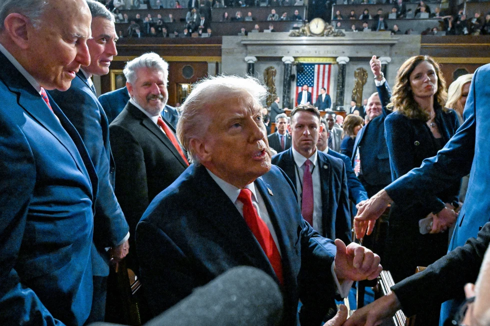

Monday, June 29, 2026
LIVE 7hrs ago
President Donald Trump exits the House Chamber after delivering the State of the Union address to a joint session of Congress in the House chamber at the U.S. Capitol in Washington, Tuesday, Feb. 24, 2026.


WASHINGTON —The State of the Union address was given by President Donald Trump. Making that message stick is now his challenge.
He bragged of an economic revival at home and the establishment of a new global order abroad in his Tuesday speech, which was an expression of satisfaction in the accomplishments of his still-young second term. Later this week, Trump will get his first chance to test drive that argument during the midterm year when he visits Texas, where the Latino voters who supported him during his successful 2024 reelection campaign emphasized how he had reformed the Republican coalition.
A growing Middle East crisis threatens to divert attention from Trump's domestic agenda, and the White House is working to spread that message to a wider population that is generally dissatisfied with his job performance. Additionally, Trump frequently deviates from the agenda during political rallies. For example, last week in Rome, Georgia, he claimed to have "solved" the affordability problem, despite the fact that voters' top worry is still high costs.
However, Trump's 108-minute speech on Tuesday night focused on themes of economic prosperity and a more secure America, which will serve as the foundation for the larger story that he and his fellow Republicans will try to pitch to voters this November.
Sen. Markwayne Mullin, R-Okla., who is close to Trump, told TheNewyork, "This is going to be setting the tone for the following year."
To further their agenda, presidents frequently take trips just after delivering the State of the Union address. For example, in the final two years of his presidency, President Joe Biden traveled the day after his speech to swing states like Pennsylvania and Wisconsin.
Trump will not depart the Washington region until later this week, when he travels to Texas to discuss energy and economic policy, just days before the state's congressional primary on March 3. After his State of the Union, the president will spend a large portion of the day attending meetings at the White House, such as policy sessions and a meeting with Transportation Secretary Sean Duffy, instead of traveling.
However, Trump is renowned for his ability to command attention in a fragmented news environment, and he is sure to find additional methods to make an impression outside of the typical post-State of the Union blitz. Trump incorporated a number of social media-friendly surprises into his speech.
Austin Cantrell, an assistant White House press secretary during Trump's first term, stated, "Donald Trump is a master at the big moments, so he obviously cares a lot about how the speech goes, but what he cares a lot about are the clips that get replayed over and over again from the State of the Union."
"I don't expect this to be some Aaron Sorkin-esque, perfectly choreographed post-State of the Union media fan-out," stated Cantrell, who is currently employed with the Chattanooga, Tennessee-based firm Bridge Public Affairs.
The audience was taken aback six years ago by Trump's decision to present Rush Limbaugh, a conservative radio presenter, with the Presidential Medal of Freedom, the nation's highest civilian award. Similar attention-grabbing elements were incorporated in Tuesday's speech, which broke records for duration. He declared that Connor Hellebuyck, the goalie for the U.S. men's hockey team, who recently won a gold medal at the Winter Olympics in Milano-Cortina, Italy, would receive the same award. There was thunderous cheering when Trump summoned Hellebuyck and his colleagues into the House floor.
In addition to criticizing Democrats for opposing programs that he claimed had made America safer and more prosperous, Trump used his speech to introduce some fresh proposals to address concerns about affordability. In her Democratic response, Virginia Governor Abigail Spanberger claimed that Trump's policies continue to put a strain on families and that costs are still high for many Americans.
Trump warned about the consequences of unregulated, illegal migration and urged both parties to "protect American citizens, not illegal aliens." He also pressed for measures to strengthen voter identification laws and ban mail-in ballots.
Sen. Eric Schmitt, R-Mo., another close Trump ally, told the AP, "I do think a lot of the success outlined in the State of the Union will be a part of the Republican message in the fall," citing the GOP's accomplishments on border security and tax policy. Regarding the president, I believe he will be eager to go and discuss the accomplishment.
Trump has pledged to make many trips across the nation until the November elections, according to senior White House officials. On his economic tour, he has so far visited key battleground states like Michigan, Pennsylvania, and North Carolina, but he also visited Iowa, which is consistently conservative, and the congressional seat of former Georgia Representative Marjorie Taylor Greene. While occasionally deviating greatly from the economic issues the tours are intended to highlight, he has supported candidates. In Rocky Mount, North Carolina, he joked with Republican Michael Whatley and pushed his Senate campaign.
Voters may tell if a president is interested in establishing a relationship with them simply by the act of leaving Washington. Herbert Hoover, an engineer, self-made businessman, and technocrat, thought he could fix the country's problems by working with his staff in seclusion and rarely leaving Washington, according to Edward Frantz, a historian at the University of Indianapolis. Because they didn't see Hoover relating to Americans, voters came to believe that he didn't give a damn.
"If you consider a call and response, the State of the Union is the call. If you truly care about staying in touch with people, what is the response?" "Frantz said." "Getting on the road is the best way to be able to see that."
Throughout his second term, Americans' perceptions of Trump have stayed mostly unchanged, thus it is unlikely that a single speech will significantly change their perceptions. According toNewyork-NORC Center for Public Affairs Research polling, his approval rating has barely changed during his second term, dropping from 42% in March 2025 to 36% in early February.
However, like with other presidents, Trump has the opportunity to rephrase his message in the annual address.
Timothy Naftali, a presidential historian, said that Bill Clinton established the themes of his Democratic reelection campaign in 1996 with his State of the Union address. Following George W. Bush's resounding defeat in the November 2006 midterm elections, the Republican took a notably more accommodative stance toward the newly appointed Democratic leadership on Capitol Hill.
According to Naftali, a senior research fellow at Columbia University's School of International and Public Affairs, "the State of the Union is less important than they once were because a president like Trump is always available." "However, the State of the Union is a chance to either reaffirm or reset the president's agenda, and resetting an agenda in the age of social media is not the same as resetting it in the past."